Windows Event Viewer
About This Guide
There may be times where Unreal Engine 4 will crash but will not open the Crash Reporter windows so that you can add comments and submit the report. This can make it difficult to see what exactly caused your crash in the Editor. Typically, these kinds of crashes are not attributed directly to Unreal Engine 4 causing the crash, but instead are attributed to an error with Windows that causes the application in question to shut down.
This guide will walk through the steps of using Windows Event Viewer (think of this like a crash reporter for Windows) to locate the error code from the application in question being shut down. This guide will not attempt to diagnose specific instances and should be considered as a broad overview for retrieving the necessary information for our Support team or for yourself to help diagnose what may be causing the issue in Windows that closes the application.
Documentation and Links
Retrieving Event Viewer Logs
Step 1: Locating the Event Viewer
Navigate to your Control Panel in Windows and click on System and Security .
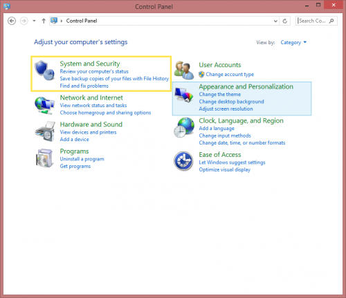
Then you will need to click on
Administrative Tools
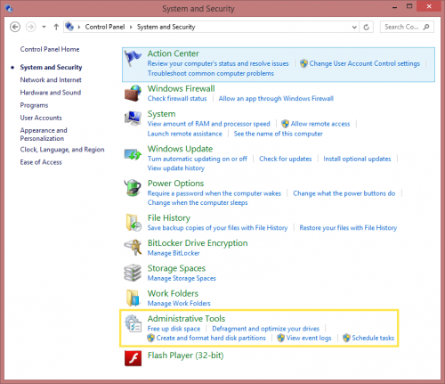
This will open a separate window with the applications related to Administrative Tools.
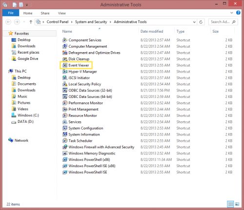
Now double-click on Event Viewer to open the application.
Step 2: The Event Viewer
Once you have opened the Event Viewer you will see a window like this.
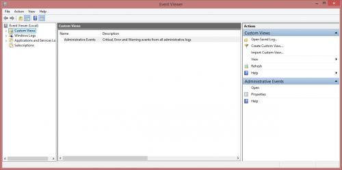
Step 3: Overview and Summary Tab
In the top left you will see the section Event Viewer (Local) . This should be selected by default when you open the Event Viewer, but in the case it is not you can select it here to see the Overview section we will need access to.

Step 4: Event Errors for Applications
In the Overview and Summary tab you will see the options for several drop-downs that can be expanded by clicking on the plus sign [+] . These drop downs will provide selections where we can grab the event logs we will need.
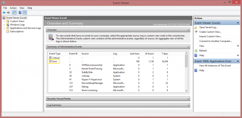
Select the plus sign [+] next to Error then scroll down until you see the option for Application Error . Click on this to highlight it.
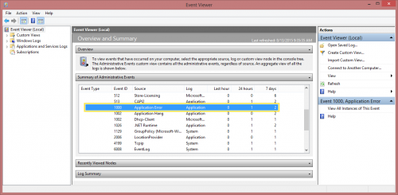
Step 5: Application Error Events
Now that we have Application Error highlighted there is a option now in the panel on the right.
Select View All Instances of This Event .
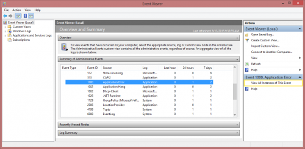
This will now populate the center area with a Summary page events section.
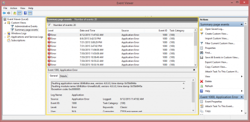
Step 6: Selecting and Saving the Event Logs
Now that we have the Event Logs for any errors that may have occurred in Windows in front of us, you can select the application errors individually to see what application caused the error.
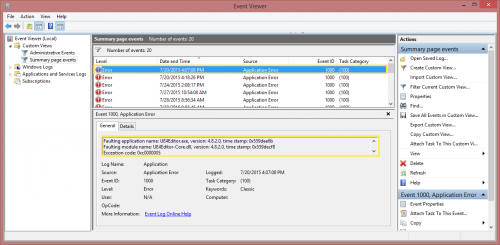
In the General tab you will see information about a specific Exception Code that can then be cross referenced with Windows errors to better help determine why the application closed without warning.
Next we will want to save the individual or multiple logs needed.
You can do this by selecting the Error(s), then in the right side Actions panel you can select Save Selected Events... .
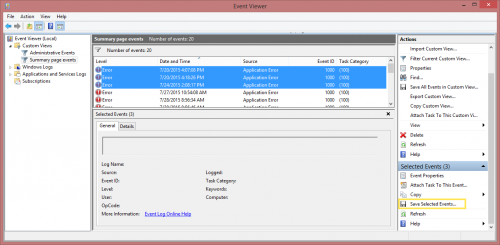
Now choose a location to save your Event Log files.
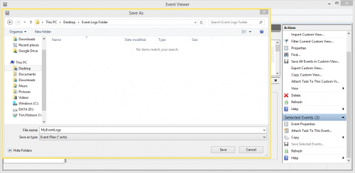